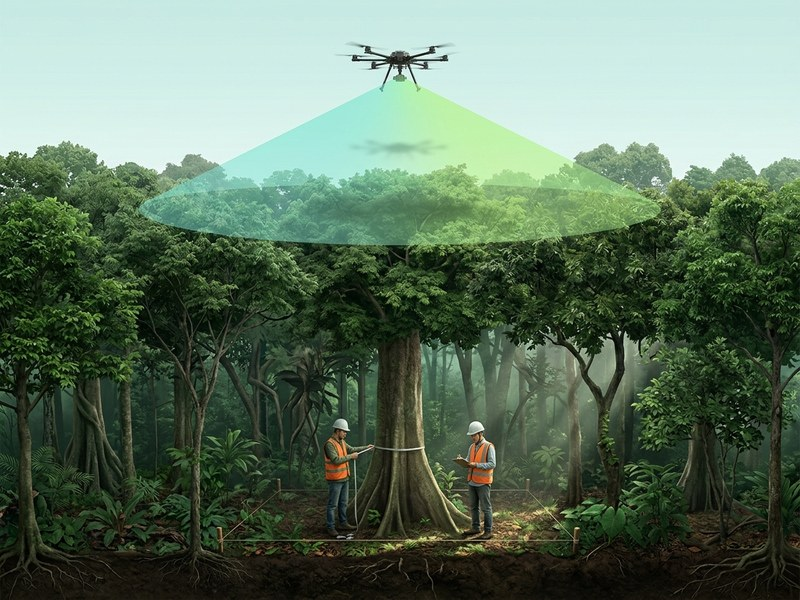
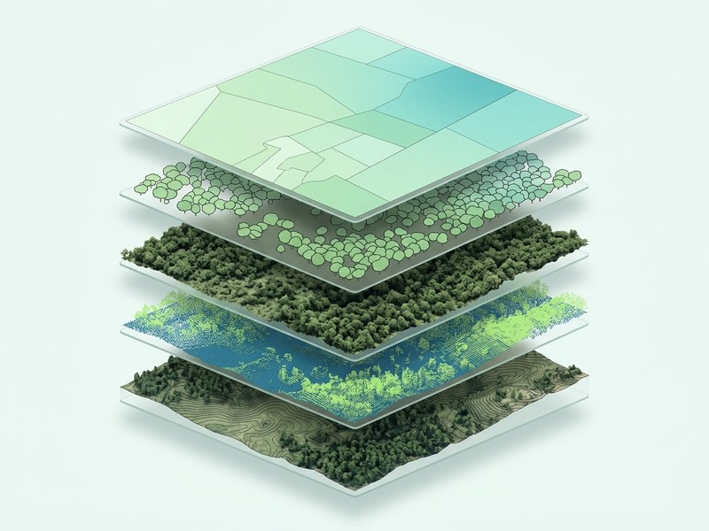
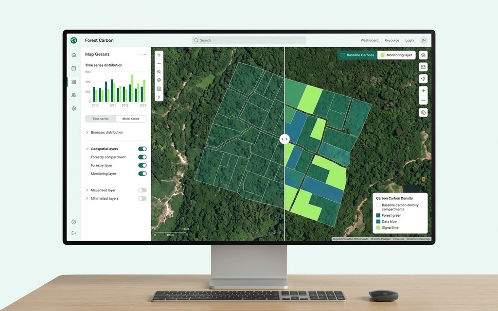

Chưa rõ trữ lượng carbon
Thiếu số liệu sinh khối và trữ lượng theo lô để làm cơ sở đánh giá tiềm năng của khu rừng.
FOREST CARBON INTELLIGENCE / S0285–S0287
Đánh giá và lập bản đồ hấp thụ carbon
trong sinh khối rừng bằng UAV LiDAR.
Kết hợp dữ liệu từ trên cao và đo đạc thực địa để ước tính sinh khối, lập bản đồ trữ lượng carbon theo lô — kèm đánh giá sai số minh bạch.
01 / BÀI TOÁN CỦA CHỦ RỪNG
Dữ liệu đo đạc là điểm khởi đầu cho quản lý rừng, chuẩn bị dự án carbon và báo cáo ESG.
Thiếu số liệu sinh khối và trữ lượng theo lô để làm cơ sở đánh giá tiềm năng của khu rừng.
Điều tra thực địa đòi hỏi nhân lực; dữ liệu mẫu điểm còn hạn chế khi mô tả toàn bộ không gian rừng.
Cần kết nối số liệu đo đếm với vị trí cụ thể để phân vùng quản lý và chuyển tiếp cho các bên chuyên môn.
02 / GIẢI PHÁP GASCOLAE
Một chuỗi dữ liệu xuyên suốt, kết nối viễn thám với bằng chứng thực địa.
UAV LiDAR kết hợp RGB hoặc đa phổ khảo sát toàn bộ ranh giới đã thống nhất. Dữ liệu ô tiêu chuẩn giúp hiệu chuẩn mô hình sinh khối trên mặt đất (AGB), từ đó quy đổi sang trữ lượng carbon theo lô.

03 / PHƯƠNG PHÁP
Hai nguồn dữ liệu bổ trợ để xây dựng mô hình phù hợp với khu rừng của bạn.
Thu thập đám mây điểm 3D, mô hình địa hình và chiều cao tán. Lớp cây đơn lẻ được bổ sung từ Level 2.
Đo đường kính ngang ngực (D1.3), chiều cao vút ngọn và dữ liệu thực địa để áp dụng phương trình allometric phù hợp.
04 / CÔNG NGHỆ & DỮ LIỆU
Từ đám mây điểm đến bản đồ chuyên đề, mỗi lớp dữ liệu trả lời một câu hỏi về cấu trúc và sinh khối rừng.
Cấu trúc không gian ba chiều sau lọc và phân loại.
DTM / DSM / CHM — nền tảng cho phân tích rừng.
Vị trí, chiều cao và diện tích tán từng cây.
Phân bố theo lô, đơn vị tấn C/ha và tCO₂e/ha.

05 / QUY TRÌNH TRIỂN KHAI
Tiếp nhận ranh giới, hồ sơ rừng; rà soát điều kiện hiện trường và thủ tục bay.
Thống nhất tuyến bay, độ phủ và mạng lưới ô tiêu chuẩn mặt đất.
Bay quét LiDAR/RGB song song với đo đếm ô tiêu chuẩn thực địa.
Tạo lớp GIS, hiệu chuẩn mô hình AGB. Tách cây đơn lẻ từ Level 2.
Đánh giá sai số, hoàn thiện bản đồ và báo cáo phương pháp.
Phương án và tiến độ được thống nhất sau khi đánh giá địa hình, khả năng tiếp cận, điều kiện bay và phạm vi khảo sát.
06 / CẤP ĐỘ DỊCH VỤ
Từ bản đồ nền một kỳ đến theo dõi biến động dài hạn.
Cả ba cấp độ đều kết hợp đo ô tiêu chuẩn mặt đất.
LEVEL 1 BASELINE
Thiết lập mốc trữ lượng carbon theo lô trong một kỳ khảo sát.
LiDAR + RGB / 01 KỲ
LEVEL 2 TREE-LEVEL
Bổ sung thông tin từng cây và phân tầng trạng thái rừng.
LEVEL 1 + ĐA PHỔ / 01 KỲ
LEVEL 3 MONITORING
Theo dõi thay đổi sinh khối và trữ lượng carbon qua thời gian.
LEVEL 2 + BAY LẶP ĐA KỲ
Level 3: chu kỳ khuyến nghị từ 2–3 năm trở lên, giữ nhất quán tham số bay, cảm biến và mùa vật hậu. Phạm vi, cấu hình và báo giá được xác nhận theo từng dự án.
07 / SẢN PHẨM BÀN GIAO
Bộ sản phẩm có tọa độ và định dạng GIS, có thể chuyển tiếp cho đơn vị lập hồ sơ MRV.

Dữ liệu cấu trúc 3D sau lọc và phân loại điểm.
Mô hình số địa hình, bề mặt và chiều cao tán rừng.
Trữ lượng theo lô (tấn C/ha, tCO₂e/ha). Lớp cây đơn lẻ từ Level 2; biến động đa kỳ ở Level 3.
Phương trình áp dụng, độ tin cậy và chỉ số sai số của kỳ đo (R², RMSE).
08 / PHẠM VI & GIỚI HẠN
Phạm vi đánh giá là sinh khối trên mặt đất (AGB).
Phương pháp này không đo trực tiếp bể carbon dưới mặt đất, gỗ chết, thảm mục và đất. Ước tính phụ thuộc dữ liệu mẫu, phương trình phù hợp với vùng / loài và điều kiện khảo sát.
Kết quả không thay thế báo cáo MRV hay thẩm định độc lập; không đồng nghĩa với tín chỉ carbon được cấp. Ngưỡng sai số nghiệm thu và phương án cụ thể cần chuyên viên xác nhận.
09 / ỨNG DỤNG THỰC TẾ
Lập bản đồ baseline và bộ dữ liệu đầu vào cho đơn vị lập MRV.
Ước tính trữ lượng, phân bố không gian phục vụ đánh giá trước đầu tư.
So sánh sinh khối và tốc độ tích lũy carbon qua các kỳ đo ở Level 3.
Kết nối thông tin carbon theo lô với công tác quản lý và phân vùng rừng.
10 / CÂU HỎI THƯỜNG GẶP
Tìm hiểu trước khi bắt đầu khảo sát.
Khám phá trợ lý tư vấnPhạm vi là sinh khối trên mặt đất (AGB). Các bể dưới mặt đất, gỗ chết, thảm mục và đất không đo được trực tiếp bằng phương pháp UAV LiDAR này.
Không. Dịch vụ cung cấp dữ liệu đo đạc đầu vào có tọa độ, phương pháp và bảng sai số. Việc lập hồ sơ MRV và thẩm định độc lập thuộc các khâu chuyên môn tiếp theo.
LiDAR đo cấu trúc tán đứng nhưng không đo trực tiếp D1.3 dưới tán. Cần đo mặt đất để hiệu chuẩn phương trình allometric và kiểm tra mô hình sinh khối ở mọi Level.
Với Level 3, chu kỳ khuyến nghị từ 2–3 năm trở lên để phân biệt tăng trưởng sinh khối với sai số phép đo. Tham số bay, cảm biến và mùa vật hậu cần nhất quán; chu kỳ cụ thể được thống nhất theo dự án.
Chuẩn bị địa điểm, diện tích ước tính, mục tiêu dự án, ranh giới lô dạng số và hồ sơ hiện trạng rừng nếu có. Chuyên viên sẽ trao đổi về điều kiện tiếp cận, dữ liệu còn thiếu và phương án phù hợp.
Báo giá và ngưỡng sai số nghiệm thu cần được xác nhận sau khi đánh giá phạm vi, địa hình, cấu hình và mạng ô mẫu. Số liệu từ các nghiên cứu không phải cam kết của dịch vụ.
11 / TRỢ LÝ TƯ VẤN
Trợ lý AI Tư vấn Carbon Rừng GASCOLAE giúp bạn tìm hiểu phương pháp, cấp độ và phạm vi dịch vụ.
Bản demo trả lời theo nội dung có sẵn. Chưa kết nối mô hình AI hoặc chuyên viên trực tuyến.
Gặp chuyên gia tư vấnXin chào! Tôi có thể giúp bạn tìm hiểu dịch vụ S0285–S0287. Hãy chọn một câu hỏi bên dưới.
12 / KẾT NỐI VỚI GASCOLAE
Chia sẻ nhu cầu khảo sát để chuẩn bị trao đổi về phương án kỹ thuật và bộ dữ liệu phù hợp.
Đánh giá và lập bản đồ hấp thụ carbon trong sinh khối rừng.